Full pyTrance tutorial on a U2OS MERFISH dataset#
import warnings
import matplotlib.pyplot as plt
import numpy as np
import pandas as pd
import seaborn as sns
from anndata import AnnData
from sklearn.preprocessing import LabelEncoder, OneHotEncoder
import pytrance as pt
RANDOM_SEED = 808
warnings.filterwarnings('ignore') # Suppress all warnings
/data/rajewsky/home/lstreng/miniforge3/envs/pytrance/lib/python3.12/site-packages/tqdm/auto.py:21: TqdmWarning: IProgress not found. Please update jupyter and ipywidgets. See https://ipywidgets.readthedocs.io/en/stable/user_install.html
from .autonotebook import tqdm as notebook_tqdm
Parameter choices always depend on the dataset:
In general, we recommend to set a threshold for minimum gene and cell counts to remove lowly expressed genes and low quality cells. In this dataset all genes are highly expressed (compared to other datasets) and cells have high counts, so we don’t set a threshold for either. When analyzing your own data you can infer thresholds for example from gene or cell count histogram plots.
For faster processing we only use a small subset of the data here.
# raw data params
batches = [0, 1, 2] # list of batches or 'all'
min_gene_counts = 0
min_cell_counts = 0
cell_key = 'cell'
gene_key = 'gene'
x_key = 'x'
y_key = 'y'
z_key = None
1. prepare data for training and analysis#
The data has to be in anndata format with observations corresponding to single transcripts.
adata_cellular = pt.data.load_example()
# subset and filter data
if batches == 'all':
batch_list_str = adata_cellular.obs['batch'].unique()
batch_list_int = [int(b) for b in batch_list_str]
else:
batch_list_int = batches
batch_list_str = [str(b) for b in batches]
adata_cellular_filtered = adata_cellular[adata_cellular.obs['batch'].isin(batch_list_str)].copy()
adata_cellular_filtered.uns['points'] = adata_cellular_filtered.uns['points'][adata_cellular_filtered.uns['points']['batch'].isin(batch_list_int)].copy()
# create one hot encoded matrix for transcripts
genes_one_hot = OneHotEncoder().fit(np.sort(adata_cellular_filtered.uns['points'][gene_key].unique()).reshape(-1, 1)).transform(adata_cellular_filtered.uns['points'][gene_key].values.reshape(-1, 1))
# create anndata object from dataframe
adata_cellular_filtered.uns['points'].index = adata_cellular_filtered.uns['points'].index.astype(str) # avoid warning
adata = AnnData(genes_one_hot,
obs = adata_cellular_filtered.uns['points'])
adata.obsm['spatial'] = np.stack((adata.obs[x_key].values, adata.obs[y_key].values), axis=1)
adata.var.index = np.sort(adata.obs[gene_key].unique())
del genes_one_hot
# filter by gene count
genes_to_keep = adata.var_names[np.asarray(adata.X.sum(axis=0))[0] > min_gene_counts]
adata = adata[adata.obs[gene_key].isin(genes_to_keep), genes_to_keep].copy()
# filter by cell counts
cell_counts = adata.obs[cell_key].value_counts()
cells_to_keep = cell_counts.index[(cell_counts > min_cell_counts)]
adata = adata[adata.obs[cell_key].isin(cells_to_keep)].copy()
adata.obs = adata.obs.reset_index(drop=True)
le = LabelEncoder()
le.fit(adata.obs[cell_key].values)
adata.obs['cell_encoded'] = le.transform(adata.obs[cell_key].values) # add integer cell IDs
adata.obs['id'] = np.arange(adata.n_obs)
print(adata)
print('median transcripts per cell:', np.median(adata.obs.groupby(cell_key, observed=True).count().iloc[:, 0].values))
print('mean transcripts per cell:', np.mean(adata.obs.groupby(cell_key, observed=True).count().iloc[:, 0].values))
AnnData object with n_obs × n_vars = 664116 × 135
obs: 'x', 'y', 'gene', 'cell', 'nucleus', 'batch', 'cell_encoded', 'id'
obsm: 'spatial'
median transcripts per cell: 13935.5
mean transcripts per cell: 13835.75
# load cell and nucleus boundaries
# helper function from https://gis.stackexchange.com/questions/359962/shapely-wkt-loads-skip-bad-geometries
from shapely import wkt
def wkt_loads(x):
try:
return wkt.loads(x)
except Exception:
return None
boundary_coords = [np.array(wkt_loads(cs).boundary.coords) for cs in adata_cellular.obs.cell_shape]
cell_boundaries = pd.DataFrame({'x': [bc[:, 0] for bc in boundary_coords], 'y': [bc[:, 1] for bc in boundary_coords]}, index=adata_cellular.obs_names)
boundary_coords = [np.array(wkt_loads(ns).boundary.coords) if ns != 'None' else np.array([[None, None]]) for ns in adata_cellular.obs.nucleus_shape]
nucleus_boundaries = pd.DataFrame({'x': [bc[:, 0] for bc in boundary_coords], 'y': [bc[:, 1] for bc in boundary_coords]}, index=adata_cellular.obs_names)
2. create model and training data#
When using a radius-based graph construction, the radius should be chosen depending on the cell size and spatial scale of interest. When using a nearest neighbor-based construction we recommend to set the number of neighbors based on transcript density.
In our experience a radius of half of the mean nuclei radius is a good starting point.
pt.tl.suggested_radius(nucleus_boundaries)
mean nuclei radius: 98.06953791681443
suggested radius: 49
# data prep params
radius = 50 # suggestion from above (rounded)
n_neighbors = 0
n_jobs = 10
edges = 'connectivity'
include_self = True
from torch import Generator
from torch.optim import Adam
from torch_geometric.loader import DataLoader
from pytrance.models.DGI.models import DGI
# model params
hid_units = [16]
# train params
epochs = 10
batch_size = 1
patience = 20
lr = 0.001
l2_coef = 0.0
drop_prob = 0.0
device = 'cuda'
minibatching = True
pt.gnn.seed_everything(RANDOM_SEED)
ft_size = adata.n_vars
# create model and load to GPU
model = DGI(ft_size, hid_units)
optimiser = Adam(model.parameters(), lr=lr, weight_decay=l2_coef)
if device == 'cuda':
model.cuda()
# set up torch data loader
print('preparing data loader ... ')
graph_kwargs = {
'radius': radius,
'n_neighbors': n_neighbors,
'x_key': x_key,
'y_key': y_key,
'z_key': None,
'mode': edges,
'n_jobs': n_jobs,
'include_self': include_self
}
loader_generator = Generator()
loader_generator.manual_seed(RANDOM_SEED)
cell_indices = adata.obs.groupby(cell_key).indices
data = pt.data.CellData(adata, cell_indices, graph_kwargs, seed=RANDOM_SEED)
train_loader = DataLoader(data, batch_size=batch_size, generator=loader_generator)
preparing data loader ...
setting up torch data set ...
100%|██████████| 48/48 [00:11<00:00, 4.02it/s]
3. train model#
# train GNN
embeds_shape = (adata.n_obs, hid_units[-1])
pt.gnn.train(model,
train_loader,
optimiser,
device,
embeds_shape,
5,
save_steps=None,
save_final=False,
seed=RANDOM_SEED)
embeds = pt.gnn.compute_embeddings(model, train_loader, embeds_shape)
Save results to: /data/rajewsky/home/lstreng/pyTrance/docs/tutorials/
Epoch: 0 train loss: 0.6486395493444408 passed time: 123.0s
Epoch: 1 train loss: 0.5483227889090686 passed time: 123.0s
Epoch: 2 train loss: 0.46981942153872197 passed time: 123.0s
Epoch: 3 train loss: 0.41411387706167985 passed time: 124.0s
Epoch: 4 train loss: 0.3719213612786501 passed time: 124.0s
baseline alternative#
feature_df = pt.gnn.neighborhood_aggregation(adata.obs.copy(),
graph_kwargs,
cell_key,
gene_key,
x_key,
y_key)
100%|██████████| 48/48 [00:39<00:00, 1.21it/s]
gene_names = sorted(adata.obs[gene_key].unique())
# aggregate individual transcript neighborhood vectors
embeds_aggregated_baseline = (
feature_df.groupby(gene_key, dropna=False)[gene_names]
.mean()
.reset_index()
)
embeds_aggregated_baseline = embeds_aggregated_baseline.set_index(gene_key)
4. aggregate and cluster embeddings#
# load pre-computed embeddings
#embeds = np.load('embeds.npz')['a']
# aggregate transcript embeddings per gene
embeds_aggregated = pt.tl.aggregate_transcript_embeddings(embeds, adata)
# PCA on gene embeddings
embeds_pca, pca_model = pt.tl.embedding_pca(embeds_aggregated, seed=RANDOM_SEED)
100%|██████████| 135/135 [00:00<00:00, 1673.71it/s]
If you know the number of subcellular patterns to expect in your data, a clustering algorithm that allows to set the number of clusters manually (e.g., k-means) is probably the easiest approach to use. However, we made the experience that a manually fine tuned leiden clustering can lead to even better results, so it might be worth exploring both.
# kmeans clustering
pt.tl.cluster_gene_embeddings(
embeds = embeds_aggregated,
n_clusters = 5,
adata = adata,
algo = 'kmeans',
return_labels = False,
seed = RANDOM_SEED)
pt.pl.embedding_pca(adata, embeds_pca, key='kmeans', pca_model=pca_model, palette='tab10')
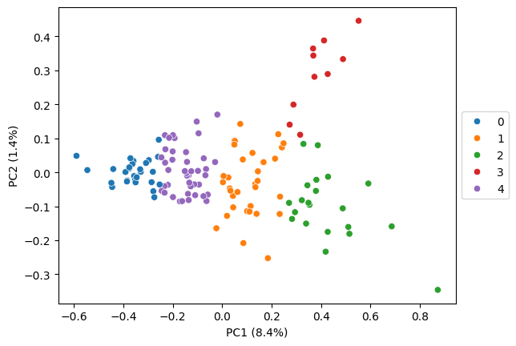
For leiden fine tuning, we recommend to compute the initial suggestion based on the elbow curve across resolution values and refine it by first exploring the localization patterns visually (step 5). If multiple clusters show the same pattern you might want to decrease the resolution for a more coarse clustering. Additionally, you can look for subclusters in the embedding heatmap (step 7), which indicates that the initial clustering is too coarse.
In our experience, clusters often correspond to cell compartments in which the RNAs co-localize, such as nucleus, nuclear edge, cytoplasm, cell edge. Therefore, aiming for 4-6 clusters is usually a good starting point.
wcss_df, knee = pt.tl.elbow_leiden(embeds_aggregated, return_results=True)
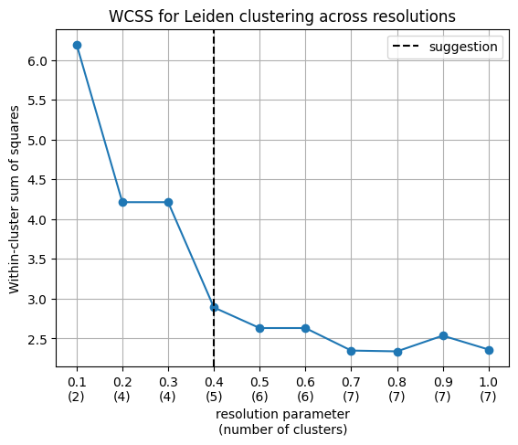
# leiden clustering
pt.tl.cluster_gene_embeddings_leiden(
embeds = embeds_aggregated,
resolution = knee,
n_neighbors = 10,
adata = adata,
return_labels = False,
key_added='leiden_elbow',
seed = RANDOM_SEED)
pt.pl.embedding_pca(adata, embeds_pca, key='leiden_elbow', pca_model=pca_model, palette='tab10')
detected 5 clusters
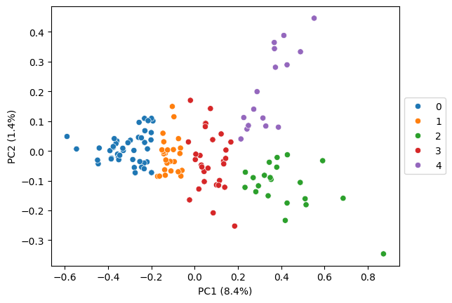
5. explore clusters visually#
cluster = 2
clustering_algo = 'leiden_elbow'
gene_set = adata.var_names[adata.var[clustering_algo] == cluster]
# sample random cells
n_cells = 4
rng = np.random.default_rng(RANDOM_SEED)
random_cells = rng.choice(adata.obs[cell_key].unique().tolist(), n_cells)
# plot distribution of single transcripts
pt.pl.cells_in_grid(1,
4,
adata,
genes=gene_set,
cell_list=random_cells,
cell_boundaries=cell_boundaries,
nucleus_boundaries=nucleus_boundaries,
hue='gene set',
plot_type='scatter',
)
# plot transcript density of gene set
pt.pl.cells_in_grid(1,
4,
adata,
genes=gene_set,
cell_list=random_cells,
cell_boundaries=cell_boundaries,
nucleus_boundaries=nucleus_boundaries,
hue='gene set',
plot_type='histogram_relative',
)
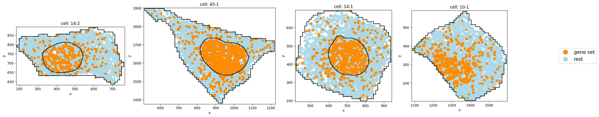
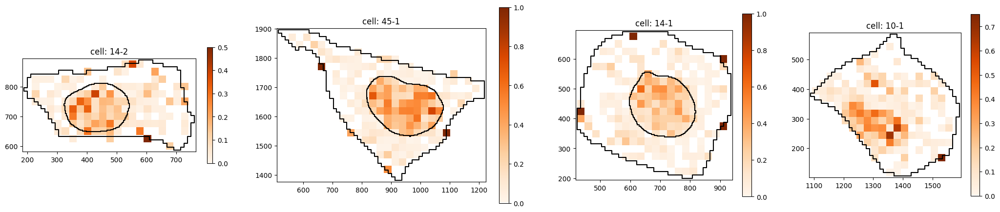
6. compute CLQ scores#
gene_set = adata.var[adata.var[clustering_algo] == cluster].index.tolist()
print(f'Computing CLQs for gene set:\n{gene_set}')
clqs, clqs_adjusted, clqs_permuted = pt.cell_score.clq(adata,
genes=gene_set,
graph=None,
n_neighbors=n_neighbors,
radius=radius,
n_permutations=100,
seed=RANDOM_SEED,
use_obs=True,
n_processes=5,
z_key=None
)
plt.hist(clqs_adjusted.values(), bins=15)
plt.show()
Computing CLQs for gene set:
['AGO3', 'ARL10', 'BUB3', 'FZD5', 'MALAT1', 'MCF2L', 'NKTR', 'POLQ', 'RAD51D', 'RNF152', 'RP4-671O14.6', 'SKP1', 'SLC5A3', 'SOD2', 'STARD9', 'TMOD2', 'TSPAN3', 'UMPS', 'XKR5', 'YIPF4', 'ZBTB43']
cells: 100%|██████████| 3/3 [00:04<00:00, 1.51s/it]
cells: 100%|██████████| 9/9 [00:07<00:00, 1.19it/s]
cells: 100%|██████████| 9/9 [00:08<00:00, 1.10it/s]
cells: 100%|██████████| 9/9 [00:16<00:00, 1.89s/it]
cells: 100%|██████████| 9/9 [00:20<00:00, 2.27s/it]
cells: 100%|██████████| 9/9 [00:20<00:00, 2.27s/it]
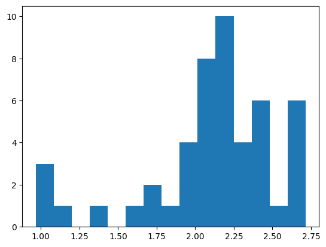
7. subclustering#
corr_pd_cluster = embeds_aggregated.loc[adata.var[clustering_algo] == cluster].T.corr()
clustermap = sns.clustermap(corr_pd_cluster, method='ward', figsize=(8, 8), cmap='Reds')
plt.show()
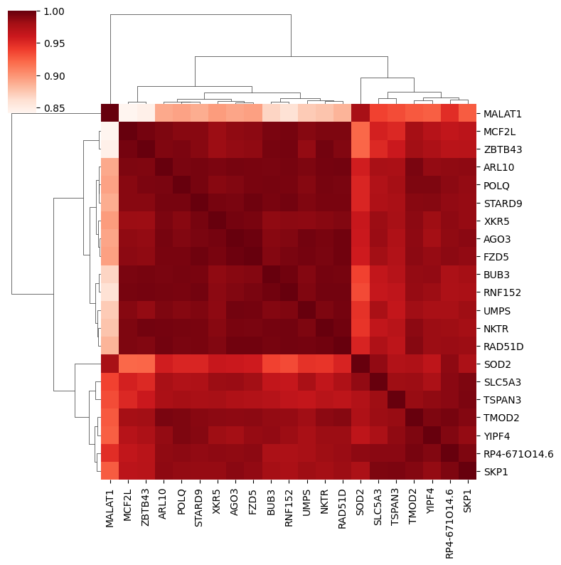
The subclusters can be visually inferred from the heatmap above. To determine the distance_threshold that produces the desired subclusters it’s easiest to run the subclustering once with default parameters and take the threshold from the y-axis of the resulting plot. Alternatively you can also define a number of subclusters using the n_subclusters parameter.
Here, it seems like there are three subcluster with MALAT1 forming a cluster by itself.
# default, only split in two clusters
gene_set = adata.var[adata.var[clustering_algo] == cluster].index.tolist()
gene_names_ordered = [label.get_text() for label in clustermap.ax_heatmap.get_xmajorticklabels()]
cluster_gene_sets_subset = pt.tl.subcluster(corr_pd_cluster.to_numpy(),
genes=gene_set,
plot_tree=True,
gene_names_ordered=gene_names_ordered)
cluster_gene_sets_subset
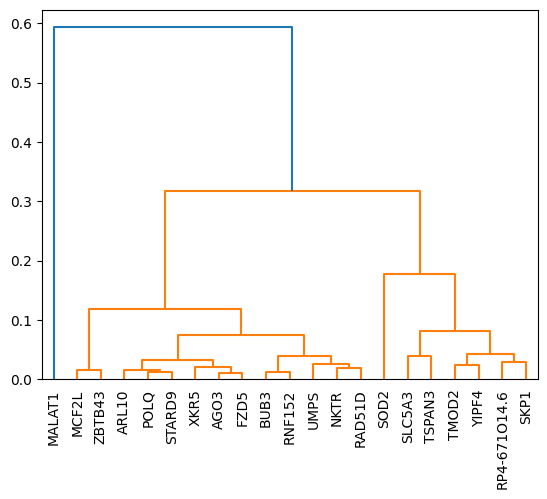
{0: ['AGO3',
'ARL10',
'BUB3',
'FZD5',
'MCF2L',
'NKTR',
'POLQ',
'RAD51D',
'RNF152',
'RP4-671O14.6',
'SKP1',
'SLC5A3',
'SOD2',
'STARD9',
'TMOD2',
'TSPAN3',
'UMPS',
'XKR5',
'YIPF4',
'ZBTB43'],
1: ['MALAT1']}
cluster_gene_sets_subset = pt.tl.subcluster(corr_pd_cluster.to_numpy(),
genes=gene_set,
n_subclusters=None,
distance_threshold=0.2,
plot_tree=True,
gene_names_ordered=gene_names_ordered)
cluster_gene_sets_subset
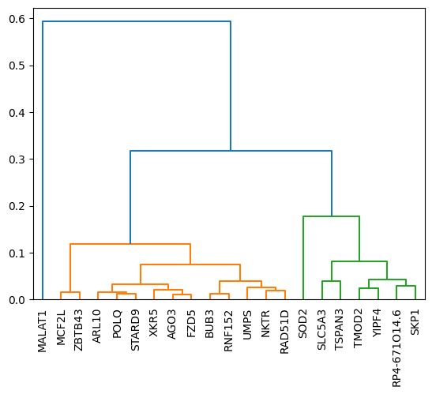
{0: ['RP4-671O14.6', 'SKP1', 'SLC5A3', 'SOD2', 'TMOD2', 'TSPAN3', 'YIPF4'],
1: ['MALAT1'],
2: ['AGO3',
'ARL10',
'BUB3',
'FZD5',
'MCF2L',
'NKTR',
'POLQ',
'RAD51D',
'RNF152',
'STARD9',
'UMPS',
'XKR5',
'ZBTB43']}
Subcluster with strong nuclear localization:
subcluster = 0
gene_subset = cluster_gene_sets_subset[subcluster]
# sample random cells
n_cells = 4
rng = np.random.default_rng(RANDOM_SEED)
random_cells = rng.choice(adata.obs[cell_key].unique().tolist(), n_cells)
# plot distribution of single transcripts
pt.pl.cells_in_grid(1,
4,
adata,
genes=gene_subset,
cell_list=random_cells,
cell_boundaries=cell_boundaries,
nucleus_boundaries=nucleus_boundaries,
hue='gene set',
plot_type='scatter',
)
# plot transcript density of gene set
pt.pl.cells_in_grid(1,
4,
adata,
genes=gene_subset,
cell_list=random_cells,
cell_boundaries=cell_boundaries,
nucleus_boundaries=nucleus_boundaries,
hue='gene set',
plot_type='histogram_relative',
)
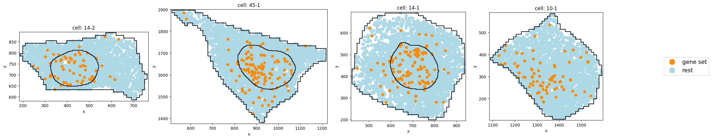
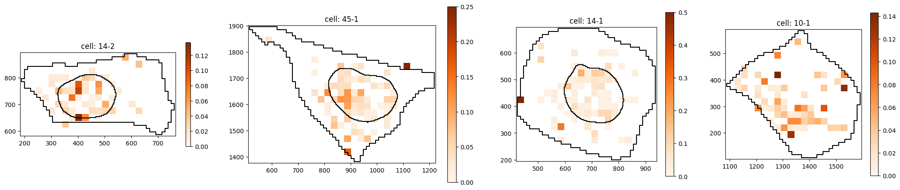
# compute CLQs for each cluster for random cells
gene_subset = cluster_gene_sets_subset[subcluster]
print(f'Computing CLQs for gene set:\n{gene_subset}')
clqs, clqs_adjusted, clqs_permuted = pt.cell_score.clq(adata,
genes=gene_subset,
graph=None,
n_neighbors=n_neighbors,
radius=radius,
n_permutations=100,
seed=RANDOM_SEED,
use_obs=True,
n_processes=5,
z_key=None
)
plt.hist(clqs_adjusted.values(), bins=30)
plt.show()
Computing CLQs for gene set:
['RP4-671O14.6', 'SKP1', 'SLC5A3', 'SOD2', 'TMOD2', 'TSPAN3', 'YIPF4']
cells: 100%|██████████| 3/3 [00:01<00:00, 1.83it/s]
cells: 100%|██████████| 9/9 [00:04<00:00, 2.15it/s]
cells: 100%|██████████| 9/9 [00:04<00:00, 2.22it/s]
cells: 100%|██████████| 9/9 [00:05<00:00, 1.61it/s]
cells: 100%|██████████| 9/9 [00:05<00:00, 1.72it/s]
cells: 100%|██████████| 9/9 [00:06<00:00, 1.48it/s]
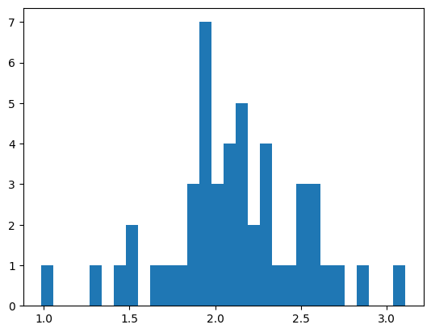
Subcluster with weaker nuclear localization:
subcluster = 2
gene_subset = cluster_gene_sets_subset[subcluster]
# sample random cells
n_cells = 4
rng = np.random.default_rng(RANDOM_SEED)
random_cells = rng.choice(adata.obs[cell_key].unique().tolist(), n_cells)
# plot distribution of single transcripts
pt.pl.cells_in_grid(1,
4,
adata,
genes=gene_subset,
cell_list=random_cells,
cell_boundaries=cell_boundaries,
nucleus_boundaries=nucleus_boundaries,
hue='gene set',
plot_type='scatter',
)
# plot transcript density of gene set
pt.pl.cells_in_grid(1,
4,
adata,
genes=gene_subset,
cell_list=random_cells,
cell_boundaries=cell_boundaries,
nucleus_boundaries=nucleus_boundaries,
hue='gene set',
plot_type='histogram_relative',
)
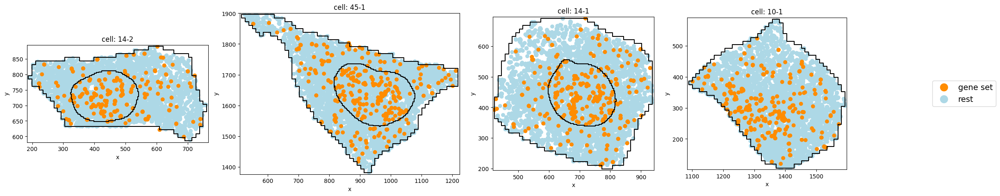
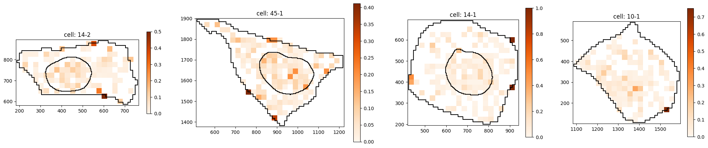
# compute CLQs for each cluster for random cells
gene_subset = cluster_gene_sets_subset[subcluster]
print(f'Computing CLQs for gene set:\n{gene_subset}')
clqs, clqs_adjusted, clqs_permuted = pt.cell_score.clq(adata,
genes=gene_subset,
graph=None,
n_neighbors=n_neighbors,
radius=radius,
n_permutations=100,
seed=RANDOM_SEED,
use_obs=True,
n_processes=5,
z_key=None
)
plt.hist(clqs_adjusted.values(), bins=30)
plt.show()
Computing CLQs for gene set:
['AGO3', 'ARL10', 'BUB3', 'FZD5', 'MCF2L', 'NKTR', 'POLQ', 'RAD51D', 'RNF152', 'STARD9', 'UMPS', 'XKR5', 'ZBTB43']
cells: 100%|██████████| 3/3 [00:02<00:00, 1.47it/s]
cells: 100%|██████████| 9/9 [00:05<00:00, 1.73it/s]
cells: 100%|██████████| 9/9 [00:05<00:00, 1.72it/s]
cells: 100%|██████████| 9/9 [00:07<00:00, 1.24it/s]
cells: 100%|██████████| 9/9 [00:06<00:00, 1.33it/s]
cells: 100%|██████████| 9/9 [00:08<00:00, 1.08it/s]
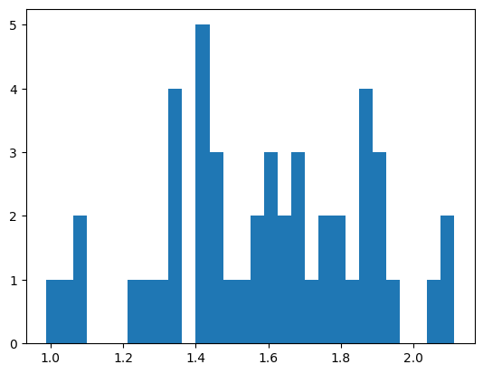